工程材料与机械制造基础（第3版）
Overview of Welding
01/概述
焊接：利用局部加热或（和）加压，使分离金属通过原子结合与扩散形成永久性连接的工艺方法。
熔焊（熔化焊）：局部熔化→冷却结晶。加热温度高、易变形，但操作方便、应用最广。
压焊（压力焊）：加热（或不加热）+施压→塑性变形+再结晶→原子间结合。适用于塑性好的金属。
钎焊：低熔点钎料熔化→填充间隙→毛细作用+扩散。适用于同种/异种金属、金属与非金属。
01/概述
优点：成形方便、适应性强、成本低（与铆接比）；可化大为小、化复杂为简单；可生产微型到大型构件、气密性好的高温高压设备；可按使用要求在不同部位选用不同材料。
应用：车辆、建筑、舰船、海洋钻探、航空航天、核电站、石油化工、电气、微电子等。
Welding Arc & Power Supply
02/电弧
电弧：电极与工件间气体介质中强烈持久的气体放电现象。阳极区~43%热量，阴极区~36%，弧柱~21%。
钢焊条焊接钢：阳极~2600K，阴极~2400K，弧心6000~8000K。
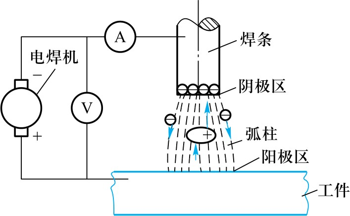
02/电弧
正接：工件接正极、焊条接负极→工件温度高。
反接：工件接负极、焊条接正极。交流弧焊机无正反接问题。
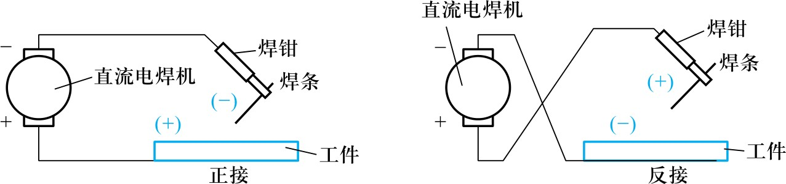
02/电弧
电源要求：① 陡降外特性（电压随负载增大而迅速降低）；② 空载电压50~90V；③ 短路电流≤1.25~2倍工作电流；④ 电弧电压16~36V。
设备类型：交流弧焊机（降压变压器→价廉、噪声小、应用广）；直流弧焊机（电弧稳定、适应各种焊条→重要结构件）；交直流两用弧焊机。
选用：酸性焊条+低碳钢→交流；碱性焊条+重要件/合金钢/非铁金属→直流。逆变式弧焊机→高效轻便，发展趋势。
Welding Metallurgy & Electrodes
03/冶金
① 温度高：熔滴~2300°C，熔池~1600°C→合金元素易烧损蒸发。
② 过程短：熔池体积小(2~3cm³)，冷却快，液态~10s→反应不充分，偏析。
③ 条件差：暴露空气中→O₂、N₂、H₂等与金属反应→氧化物/氮化物降低性能，H₂→气孔/氢脆，CO气孔。
对策：保护焊接区、补充合金元素、脱氧/脱硫/脱磷。
03/冶金
焊芯：作电极+填充金属。低碳低硫低磷专用钢丝（H08、H08A、H08E等），直径1.6~8mm，常用3.2~5mm。
药皮：① 稳弧（钾钠元素→易引弧）；② 保护（产生熔渣+隔离气体）；③ 脱氧（锰铁/硅铁）；④ 渗合金。
03/冶金
国标按化学成分分7大类：碳钢、低合金钢、不锈钢、堆焊、铸铁、铜及铜合金、铝及铝合金焊条。
型号：E5515-N5P → E=焊条，55=抗拉强度550MPa，15=碱性/全位置/直流反接。
牌号：J422 → J=结构钢焊条，42=抗拉≥420MPa，2=氧化钛钙型/交直流。
J422(酸性)、J507(碱性)分别对应国标E4303、E5015。
03/冶金
酸性焊条：酸性氧化物(SiO₂/TiO₂/Fe₂O₃)→氧化性强；电弧稳定、对油污不敏感、工艺性好；脱S/P差、塑性韧性差。适合一般钢结构。
碱性焊条：碱性氧化物(CaO/MgO/Na₂O等)+铁合金→脱S/P强、抗裂性好；对油污敏感→易气孔；工艺性较差，需直流反接。适合压力容器等重要结构。
03/冶金
① 等强度原则：低碳钢/低合金钢→焊缝金属与母材等强度。
② 同成分原则：耐热钢/不锈钢→焊缝与母材同成分。
③ 抗裂纹原则：刚度大/形状复杂/动载荷→选碱性焊条。
④ 抗气孔原则：难清理油污铁锈→选酸性焊条。
⑤ 低成本原则：满足要求下选工艺好、成本低、效率高的焊条。
Weld Joint Structure & Properties
04/接头
从熔池壁向中心方向结晶→柱状晶组织。焊缝金属强度一般不低于母材。
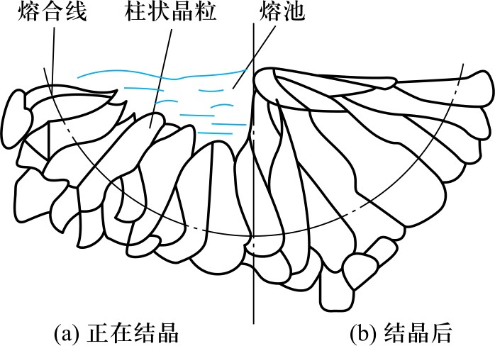
04/接头
熔合区（半熔化区，1490~1530°C）：组织极不均匀，强度↓塑性↓→裂纹发源地。
过热区（1100~1490°C）：奥氏体晶粒急剧长大，塑性大降，冲击韧度↓25%~75%。
正火区（850~1100°C）：均匀细小F+P，力学性能优于母材。
部分相变区（727~850°C）：部分转变，组织不均匀，性能较差。
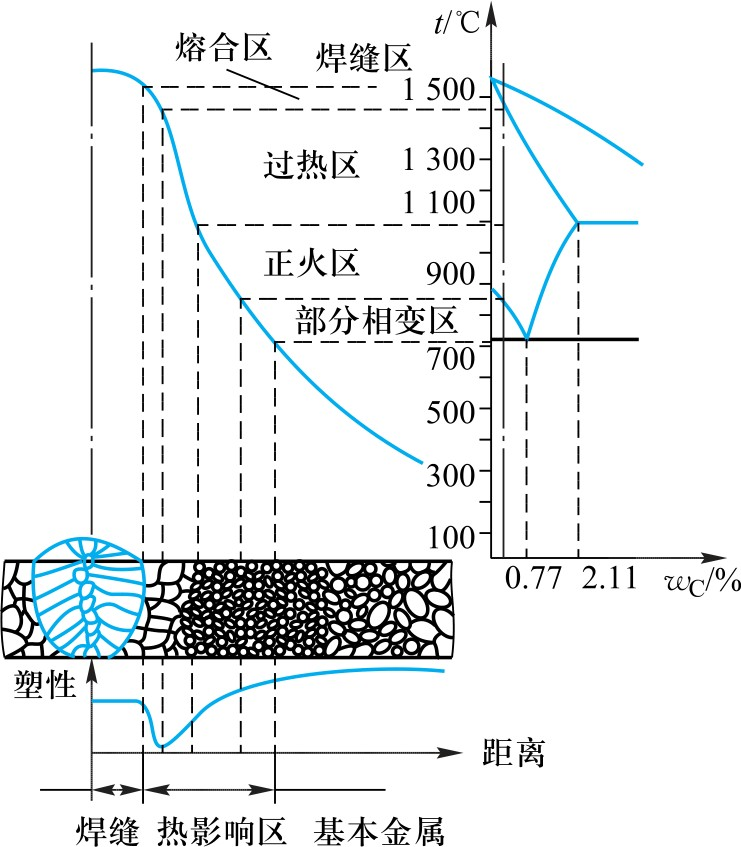
04/接头
热影响区越窄越好。温度高、热量集中→热影响区小。
手工电弧焊总宽6.0mm，埋弧焊2.5mm，等离子弧焊1.4~2.5mm，电子束焊0.05~0.75mm。
过大焊接参数（电流↑/焊速↓）→热影响区变宽。重要焊件焊后正火处理。
Welding Stress & Deformation
05/应力变形
① 收缩变形 ② 角变形（截面上、下收缩不均） ③ 弯曲变形（焊缝不对称） ④ 扭曲变形（焊接顺序不合理） ⑤ 波浪变形（薄板失稳）。
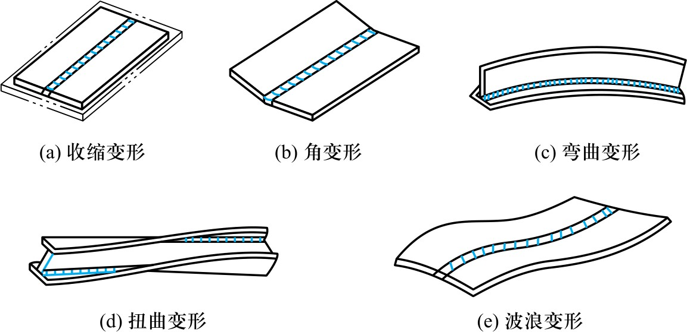
05/应力变形
① 预留收缩变形量：预先考虑收缩余量。
② 反变形法：预加方向相反、大小相等的变形抵消焊后变形。
③ 刚性固定法：焊时固定→焊后冷却再去除。适用塑性好的低碳钢，不适用铸铁。
④ 合理的焊接顺序：尽量使焊缝自由收缩，先焊短缝再焊长缝。
05/应力变形
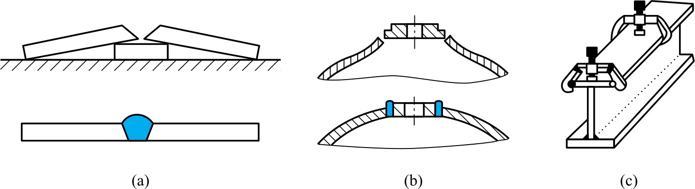
05/应力变形
先焊错开的短焊缝，再焊直通长焊缝。
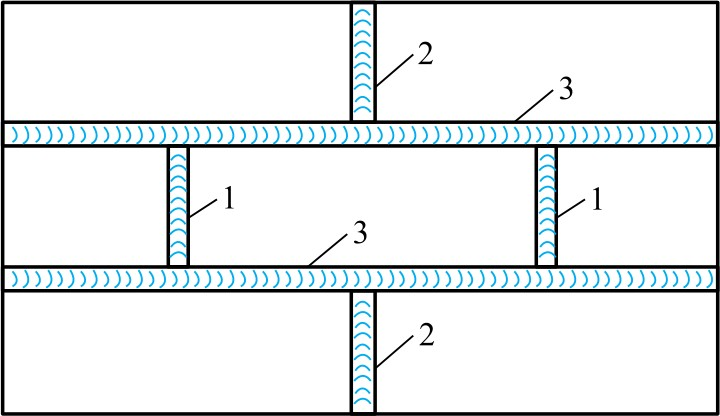
05/应力变形
⑤ 锤击焊缝法：冷却时用小锤锤击→金属塑性伸长→抵消收缩。
⑥ 加热"减应区"法：焊前加热适当部位→焊后与焊缝一起收缩。
⑦ 焊前预热+焊后缓冷：减小温差→减少应力。预热100~600°C。适用塑性差、易裂材料。
⑧ 焊后去应力退火：500~650°C保温缓冷。
05/应力变形
机械矫正：压力机/矫直机/辗压/锤击→适用于刚性小、塑性好的薄件。
火焰加热矫正：氧-乙炔火焰局部加热(600~800°C)→点状/三角/条状加热→抵消伸长变形。不需专用设备，但需经验和力学知识。
05/应力变形
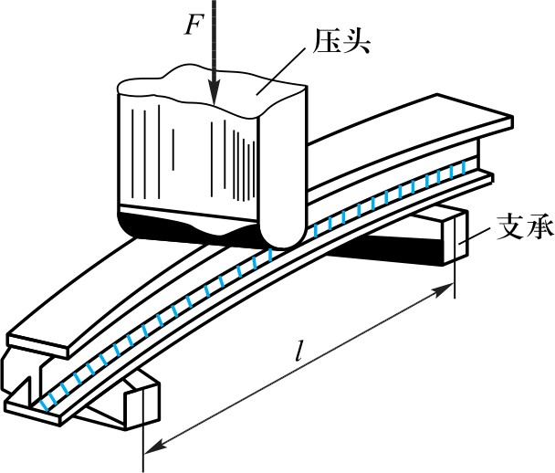
Common Welding Methods
06/焊接方法
焊条与工件间产生电弧→局部熔化→形成共同熔池→冷却凝固成焊缝。
特点：设备简单、灵活方便、适用面广，可焊各种位置和曲线焊缝。生产率低、劳动强度大。
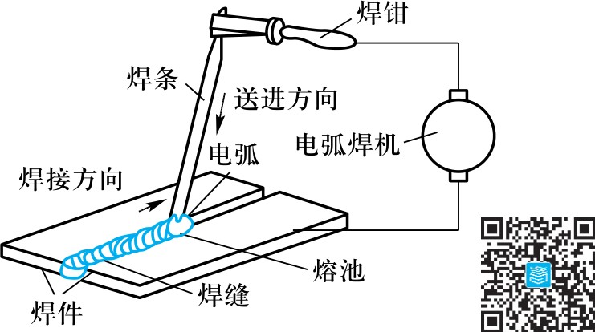
06/焊接方法
平焊、立焊、横焊、仰焊。
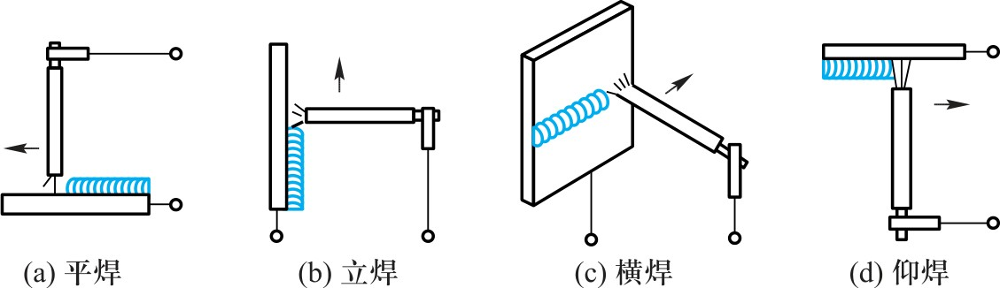
06/焊接方法
连续送进焊丝+颗粒状焊剂代替焊条。电弧在40~60mm厚焊剂下燃烧。
特点：生产率高5~10倍（大电流~1000A、连续送丝、不开坡口一次焊成<25mm板）；质量高且稳定；无弧光、少烟尘。
适用：大批量中厚板(6~60mm)直缝/大直径环缝。
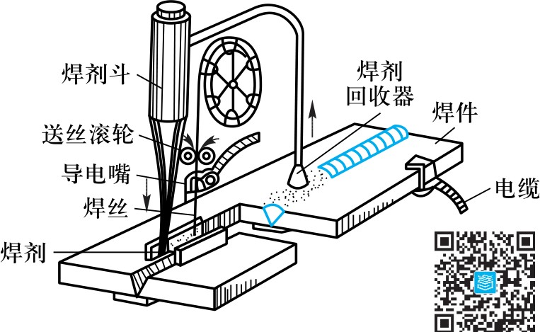
06/焊接方法
钨极氩弧焊（不熔化极，<6mm薄板）；熔化极氩弧焊（<25mm板，直流反接）。
保护效果好、电弧稳定、热影响区小、变形小、焊缝光洁。氩气成本高→主要用于Al/Mg/Ti合金及不锈钢。
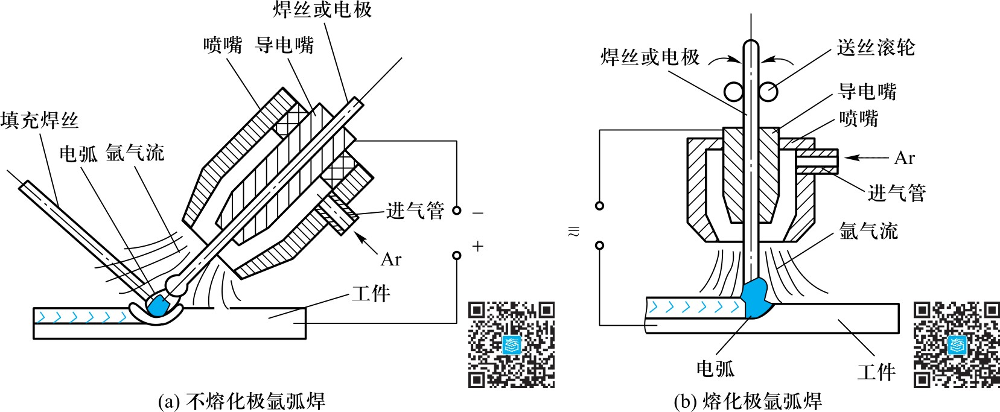
06/焊接方法
CO₂为保护气体+连续送丝。成本低、穿透力强、生产率高1~4倍、抗锈抗裂好。
缺点：CO₂氧化性→合金元素烧损、飞溅→需配含Mn/Si焊丝脱氧。用于低碳钢/低合金钢/耐热钢/不锈钢。
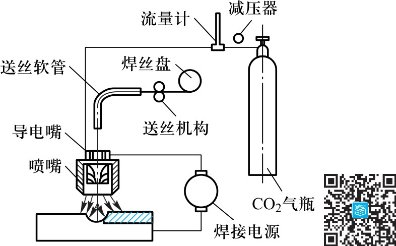
06/焊接方法
电流通过接触面→电阻热→塑性状态/局部熔化→加压形成接头。电流大、时间短(百分之一秒到几秒)。
点焊：柱状电极→搭接面焊点。薄板壳体。
缝焊：圆盘状滚动电极→连续重叠焊点。密封薄壁容器。
对焊：电阻对焊/闪光对焊。杆状零件(刀具/钢筋)。
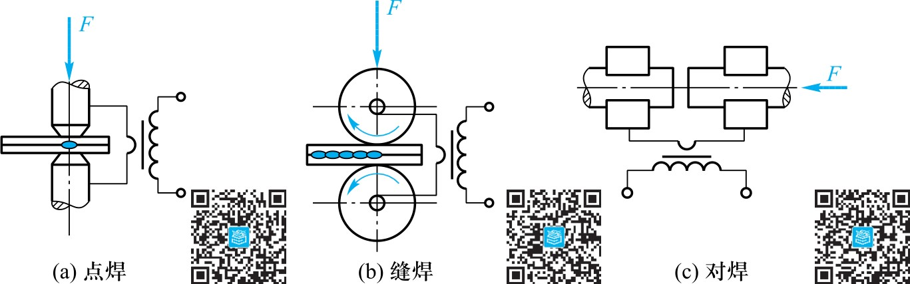
06/焊接方法
钎焊：钎料(<450°C软钎焊/ >450°C硬钎焊)填满间隙→扩散连接。钎剂去除氧化膜。电子工业波峰焊/再流焊。
电渣焊：电流通过液态熔渣电阻热→熔焊。一次焊>40mm板，最厚2m。晶粒粗大→焊后正火。铸-焊/锻-焊组合。
摩擦焊：表面摩擦热→热塑性→顶锻。尤其适合异种材料（铝-铜过渡接头、铜-不锈钢）。
06/焊接方法
焊丝插入渣池→电弧熄灭转为电渣→电阻热熔化焊丝→熔池沉积→冷却滑块上移→凝固成焊缝。
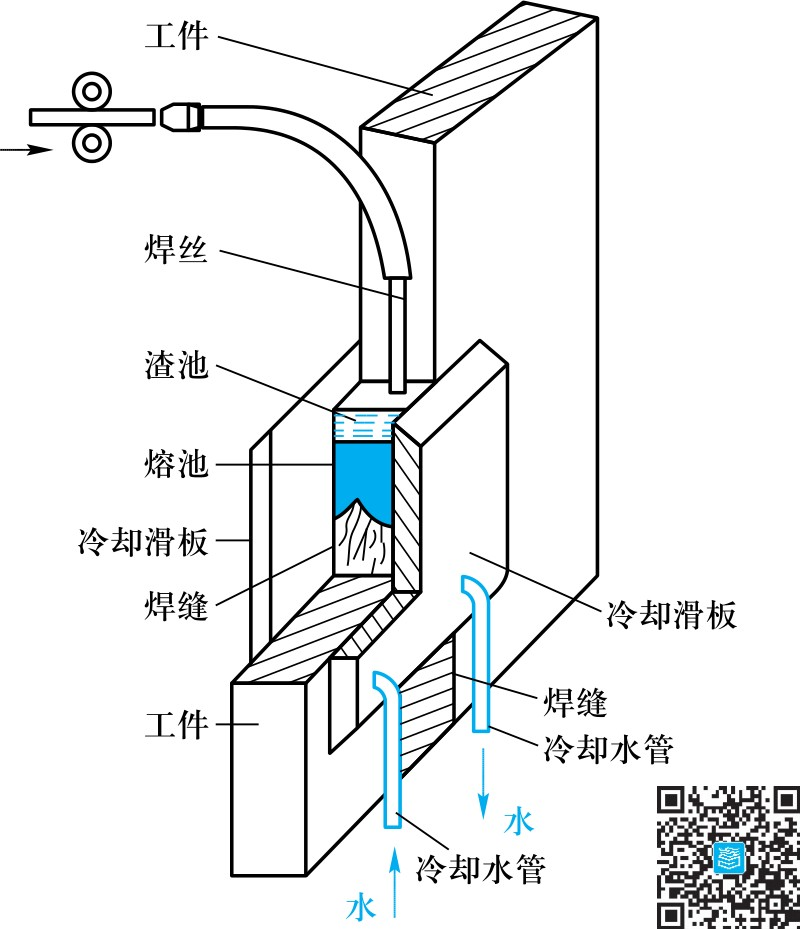
06/焊接方法
电子束焊：真空+高压静电场加速电子→高能量密度→瞬间熔化。焊速快、HZ窄、变形小。特种/难熔金属及异种金属。
等离子弧焊：压缩电弧（等离子弧）→高温高能量。穿透力强、HZ小、变形小。可焊0.025mm极薄板。
激光焊：聚焦激光束→焊缝窄、HZ和变形小。不需真空室，可远距离传射。金属/非金属均可。
06/焊接方法
爆炸焊：炸药爆炸冲击力+热量→金属高速碰撞连接。铝-钢、钛-不锈钢等异种材料。
扩散焊：一定温度+压力→微观塑性变形→原子扩散连接。可焊陶瓷+金属、多层复合材料。
超声波焊：高频振荡→局部加热+表面清理→加压连接。无热影响区，<0.5mm薄件。
06/焊接方法
① 焊接机器人：自动路径规划、自动校正轨迹、自动控制熔深的智能机器人。
② 计算机模拟与控制：温度场/应力场/应变场仿真，神经网络+模糊控制→数字化/集成化/智能化。
③ 无损探伤与可靠性评估：断裂失效准则、微观机理、延寿技术（喷丸/锤击/表面处理）。
④ 恶劣条件焊接：太空/水下/放射性环境。⑤ 装备大型化/组体化：焊接生产线/焊接中心。
Welding of Common Metals
07/材料焊接
焊接性：金属对焊接工艺的适应性→获得优质接头的难易程度。包括结合性能（缺陷敏感性）和使用性能（可靠性）。
碳当量 C_E = C + Mn/6 + (Ni+Cu)/15 + (Cr+Mo+V)/5
C_E < 0.4%：焊接性良好，不需特殊措施。0.4%~0.6%：较差，需预热/缓冷。> 0.6%：不好，须严格措施。
07/材料焊接
低碳钢（C_E<0.4%）：焊接性良好，几乎适用所有焊接方法。常用J422/J427/J507。厚度>50mm焊后去应力退火；电渣焊后正火。
中碳钢（C_E≈0.4%）：焊接性较差→选低氢型焊条+预热150~400°C+细焊条小电流开坡口多层焊+缓冷。
低合金钢：16Mn焊接性接近低碳钢，厚度>16mm或低温时预热150~250°C。高强低合金钢需预热>150°C+去应力退火。
07/材料焊接
铸铁焊接性很差：C/Si烧损→白口组织；脆性大→易裂；碳硅氧化→CO/SiO₂→气孔/夹渣。
热焊法：预热600~700°C，焊时≥400°C，焊后缓冷→质量好、可机加工。用于重要铸件（机床导轨、气缸体）。
冷焊法：不预热或仅<400°C低温预热。镍基/铜基焊条效果好。细焊条+小电流+短弧+窄缝+分段焊+锤击。
07/材料焊接
铜及铜合金：导热快→易焊不透（需预热+大热量）；Cu₂O→热裂纹；溶氢→气孔；合金元素易氧化。氩弧焊质量最好，其次气焊。
铝及铝合金：极易氧化(Al₂O₃高熔点致密膜→阻碍熔合)；溶氢→气孔；高温强度低+线膨胀大→应力变形裂纹。氩弧焊最好（直流反接）。
难熔金属(Ti/Zr/Mo/Nb)：化学活性极强→须氩弧焊/等离子弧焊/电子束焊，需高纯氩气保护。
Welding of Non-metallic Materials
08/非金属
陶瓷焊接：钎焊最常用。两步钎焊法（预金属化后钎焊）+直接钎焊法（活性钎料含Ti/Zr/Hf）。也可用扩散焊、超声波压焊。
高分子材料焊接：
• 热固性：固化后不熔不溶→只能黏接和机械连接。
• 热塑性：可熔化焊接（热气焊/热板焊/摩擦焊/超声波焊/激光焊）。热气焊和热板焊最广泛。
08/非金属
树脂基复合材料：同基体高分子焊接方法相同。与金属焊接→内藏加热元件电阻焊。
金属基复合材料：非连续纤维增强→TIG/扩散连接/摩擦焊/电子束焊/钎焊。连续纤维→更困难，用激光焊/扩散连接/钎焊。
C/C复合材料：扩散连接（石墨/硼/钛作中间层）、钎焊（Si/Al/Mg₂Si/玻璃）。
Welded Structure Design
09/结构设计
材料选择：优先选C<0.2%低碳钢/C_E<0.4%低合金钢。优先选低强度等级低合金结构钢。异种材料尽量不用。多选用型材。
方法选择：低碳钢中厚板→手工电弧焊/埋弧焊/CO₂焊；薄板轻型→点焊(无密封)/缝焊(需密封)；厚板重要件→电渣焊；铝合金→氩弧焊。
09/结构设计
对接接头（受力均匀、质量易保证、最优）、角接接头、T形接头、搭接接头（应力集中+附加弯矩→避免选用）。
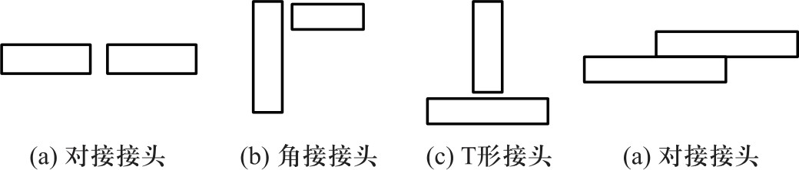
09/结构设计
I形、V形、U形、X形。目的：保证焊透。厚板需开坡口。
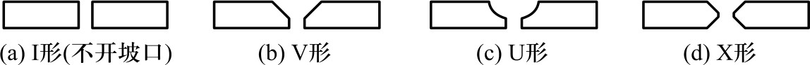
09/结构设计
① 焊缝应对称布置→减少变形。② 尽量减少焊缝数量和长度。
③ 焊缝应避免密集、交叉或重叠。④ 焊缝应避开最大应力区和应力集中部位。
⑤ 焊缝应避开或远离机械加工面。⑥ 不同厚度焊件对接→采用过渡形式。
09/结构设计
对称布置减少焊接变形。
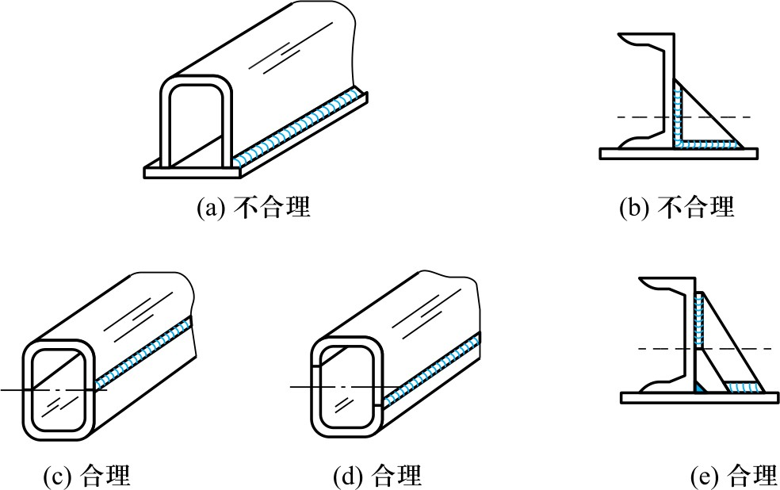
总结
熔焊：手工电弧焊（最灵活）、埋弧自动焊（最高效大批量）、氩弧焊（最优质量非铁金属）、CO₂焊（最经济低碳钢）、电渣焊（特厚板）、电子束/激光/等离子（最高能束）。
压焊：电阻焊（点焊/缝焊/对焊→高生产率大批量）、摩擦焊（异种材料回转体）、扩散焊（陶瓷+金属）、超声波焊（薄件）。
钎焊：软钎焊(<450°C，电子工业)、硬钎焊(>450°C，结构件)。适用同种/异种金属+非金属。
总结
J422(E4303)：酸性，交直流，抗拉≥420MPa → 一般钢结构。J507(E5015)：碱性，直流反接，抗拉≥500MPa → 重要结构。
C_E < 0.4% → 焊接性良好。C_E 0.4%~0.6% → 需预热+缓冷。C_E > 0.6% → 须严格措施。
低碳钢 → 最好焊；中高碳钢 → 预热+低氢焊条；铸铁 → 热焊/冷焊+镍基焊条；铝合金 → 氩弧焊；铜合金 → 氩弧焊最好。
总结
① 焊接本质：原子结合与扩散。三大类：熔焊（热源熔化）、压焊（力+热）、钎焊（钎料填充）。
② 电弧：阳极43%热量、阴极36%。正接→工件热；反接→焊条热。交流无正反。
③ 焊条：焊芯+药皮（稳弧/保护/脱氧/渗合金）。酸性工艺好、碱性抗裂好。等强度/同成分/抗裂/抗气孔/低成本五原则。
④ 热影响区：熔合区+过热区最危险。焊接参数大→热影响区宽。重要件焊后正火。
⑤ 焊接变形：5种形式。反变形法/合理顺序/预热缓冷/去应力退火。机械矫正+火焰矫正。
⑥ 焊接性：碳当量评定。铜/铝焊接性差→氩弧焊。铸铁焊补（热焊+冷焊）。陶瓷→钎焊/扩散焊。